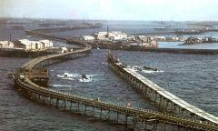
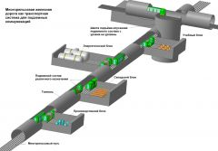
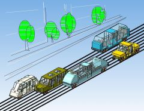

Последние публикации в блоге:
29 июля 2016, 17:06
Эстакадные многорельсовые дороги
 Многорельсовые эстакадные дороги — дороги будущего! Эстакады наносят меньший вред природе, чем обычные дороги, проложенные по поверхности земли. Однако строительство эстакад обходится очень дорого по той причине, что для их возведения необходимо строить дополнительные параллельные вспомогательные дороги с их последующей рекультивацией. Эти временные дороги нужны для подвоза строительных материалов, с поверхности этих дорог работает монтажная техника: краны, бурильные машины, установки для погружения свай. По этой причине эстакады строят там, где нет другого решения. И там где нет решения, строят и протяжённые эстакадные дороги, среди которых нельзя не упомянуть систему эстакадных дорог на нефтяном месторождении «Нефтяные камни» в Азербайджане, общая протяжённость которых превышает 300 км.
10 марта 2015, 14:10
МРЖД для подземки и оборонки
 Использование многорельсовой железной дороги (МРЖД) в качестве транспортной системы для подземных коммуникаций оборонного назначения. В условиях усиления эскалации враждебных действий со стороны вероятного противника, обороноспособность страны будет определять в том числе развитость подземных коммуникаций оборонного значения, включающая в себя складские базы, производственные и ремонтные модули, энергетические станции, бытовые и учебные блоки, госпитали, стартовые комплексы, командные пункты. Компоненты должны соединятся через тоннели транспортной системой, в качестве которой предлагаю использовать многорельсовую железную дорогу. Многорельсовая дорога подходит для организации транспортной связи по тоннелю между подземными (подводными) объектами оборонного значения. Она позволит создать двухпутное движение в тоннеле диаметром 6 метров с единицами подвижного состава с габаритами (ориентировочно) длиной 9,6 м, шириной 1,9 м, высотой 2,8 метра (одновагонного).
27 июля 2014, 14:09
Обращение к инвесторам
 Многорельсовые железные дороги — это единственно правильное решение развития автоматического наземного транспорта! Многорельсовая дорога (МРЖД) — техническое решение, позволяющее рельсовому транспорту обгонять и перестраиваться в любой точке пути. Этим преодолевается главный недостаток поезда — невозможность объехать препятствие и тем самым открываются широкие возможности в использовании рельсового транспорта для решения транспортных задач. Неспособность рельсового транспорта объезжать препятствие — единственный и главный недостаток, ограничивающий применение рельсового транспорта. Поломка одной транспортной единицы вызывает останов всего потока. Многорельсовая дорога устраняет этот фатальный недостаток и придаёт поезду манёвренность, сравнимую с автомобилем, позволяя совершать обгон, объезд, парковаться, тем самым открывает широкие перспективы для рельсового транспорта, главным образом в решении задачи автоматизации движения.
Патенты:
Патент №2439236

«Многорельсовая железная дорога и поезд с механизмом поперечного перемещения»
Патент №2623786

«Многорельсовая эстакадная дорога на сваях, револьверный агрегат и способ строительства дороги»